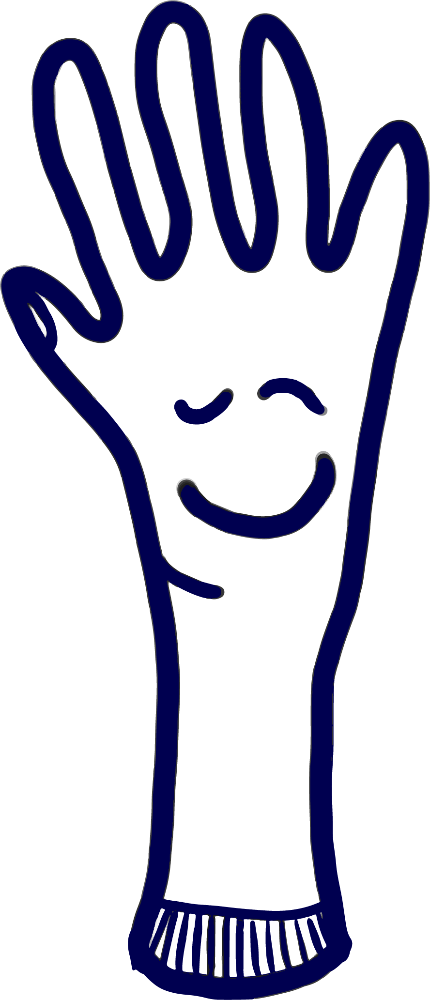

Willkommen im open-museum!
Stöbere wie in einem echten Museum in unseren Räumen und tausche dich mit anderen Besucher*innen via Audiochat aus. Entdecke allein oder als Gruppe ausgewählte Inhalte zur Spanischen Grippe.
Viel Spass beim Durchklicken und Verweilen!
 oder